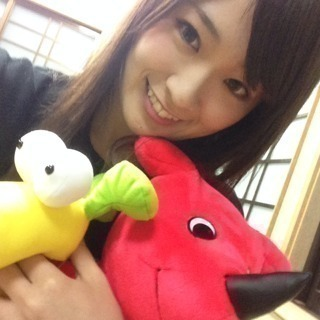

2013/1019Sat（´-`）.｡oO(か ずみん×230
バケラッタっ( *´艸｀)
.
昨日は大好きな
じょーさんの誕生日だったよ☆.%
オメイジーングヽ(´>∀<`*)ﾉ
.
.
.
.
.
そして今日は地元の
里見まつりで伏姫をやらせて
いただきました(^^)
.
途中雨が降ったりして寒い中、
足を運んでくださったみなさん
本当にありがとう(T_T)♡
.
.
とても楽しかったです( ∩ˇωˇ∩)
.
.
姫姿めっちゃ恥ずかったのですが、
ファンの皆様の声援のおかげで
堂々と振舞えましたヽ(´>∀<`*)ﾉ
.
...どうですか〜>_<？？？
.
.
また地元でもお仕事したいです♪
今日は貴重な経験、
ありがとうございました(っ*´x`)っ
.
.
.
.
.
.
.
（´-`）.｡oO（質問タイムじゃ〜
★悩んでしまったときは、
どうやってストレス発散してますか？
→いい香りをかぎます。
アロマ焚いたり...
あとは美味しいもの食べたり
とにかく楽しいことを考えますね！
.
.
.
★将来、家族を持つことになったら、
子どもは何人ぐらい欲しいですか？
→2人かな〜(^^)
私は痛みに弱いので大丈夫かしら...？
.
.
.
★動物に例えるとリスに似てるって
言われませんか！？
→リスは初めて言われました♡
よく柴犬って言われます！笑
.
.
.
★好きな動物はゴリラですか？
→残念ながら違います。
犬が好きです。^^
.
.
.
★ライブ中にコール
されると嬉しい？
→めっちゃ嬉しいです(´;ω;`)
叫んでください(´;ω;`)(´;ω;`)♡
.
.
.
★タイムマシーンがあったら
行きたい時と場所は？
→ベタだけど生まれた瞬間。
どうだったのかな〜(*´ω`*)？
.
.
.
今日はここまでヽ(´>∀<`*)ﾉ
明日も頑張るよ〜っ＊
ではでは！

2013/10/19 21:36
コメント(603)
かずみんかかわいいよおー
ぴかポンどっこー
夢で会おうぜアディオス
(*´ω｀*)(*´ω｀*)(*´ω｀*)
かずみさんんんんんんんん！！！！
今日はおつかれさまです！
かずみ姫かわいい！
ゆーーち。
かずみ姫かわいい！
ゆーーち。
かずみん、こんばんは＼(^o^)／
じゅんこです！
伏姫、お疲れ様！
ウチも行きたかったー(泣)
見たかったょ…
でも行けなかった…
ごめんね。
もうホントかずみん可愛すぎるよー♡♡
これからも頑張ってね！
ずっーと応援してるから。
私はずっとかずみん単推しだよ？
かずみん、大好き♡♡
じゅんこです！
伏姫、お疲れ様！
ウチも行きたかったー(泣)
見たかったょ…
でも行けなかった…
ごめんね。
もうホントかずみん可愛すぎるよー♡♡
これからも頑張ってね！
ずっーと応援してるから。
私はずっとかずみん単推しだよ？
かずみん、大好き♡♡
お疲れさま！
なかなかいい感じやん！
天気悪かったってことは体調とか大丈夫？
風邪とかはひかんとってよ〜。
それでは( ´ ▽ ` )ﾉ
なかなかいい感じやん！
天気悪かったってことは体調とか大丈夫？
風邪とかはひかんとってよ〜。
それでは( ´ ▽ ` )ﾉ
かずみん、今日はお疲れ様＼(^o^)／
当初、遠いのもあって行くのを考えてたんだけど、
行って良かった！
てか、あんな近いとは思わなかった！(笑
雨も降り出して大変だったけど、本当に大変なのは
かずみんを始めとした演者の皆さんだよ。
俺らは単に好きで見に行ってるだけだしさ。
本当にお疲れ様でした。
身体冷やさないように、今日は暖かくして
休んでください(^o^)
当初、遠いのもあって行くのを考えてたんだけど、
行って良かった！
てか、あんな近いとは思わなかった！(笑
雨も降り出して大変だったけど、本当に大変なのは
かずみんを始めとした演者の皆さんだよ。
俺らは単に好きで見に行ってるだけだしさ。
本当にお疲れ様でした。
身体冷やさないように、今日は暖かくして
休んでください(^o^)
かずみんいつもお疲れ様ですo(^_^)o
かずみん伏姫綺麗だったよ\(//∇//)\
いつものかずみんと違って凄い良かったよ＼(^o^)／
でも館山遠過ぎ…
まぁかずみんの為だから余裕だけどね(๑•̀ㅁ•́ฅ✧
かずみん寒かったけど風邪ひかないようにねq(´･ω･`)p
では明日もポジティブにガジ頑張りましょうo(^_^)oバーい(・ω・)ノ
かずみん伏姫綺麗だったよ\(//∇//)\
いつものかずみんと違って凄い良かったよ＼(^o^)／
でも館山遠過ぎ…
まぁかずみんの為だから余裕だけどね(๑•̀ㅁ•́ฅ✧
かずみん寒かったけど風邪ひかないようにねq(´･ω･`)p
では明日もポジティブにガジ頑張りましょうo(^_^)oバーい(・ω・)ノ
お仕事お疲れ様でした♪
かずみんお疲れ様です！
伏姫お疲れ様でしたー*\(^o^)/*
姫姿のかずみんめっちゃ可愛いー！！！！
これは生で見たかったなー(T_T)笑
今日はこの辺で(o^^o)
明日からのお仕事も頑張ってくださいV(^_^)V
伏姫お疲れ様でしたー*\(^o^)/*
姫姿のかずみんめっちゃ可愛いー！！！！
これは生で見たかったなー(T_T)笑
今日はこの辺で(o^^o)
明日からのお仕事も頑張ってくださいV(^_^)V
こんばんは!(^^)!
姫～、寒い中、お疲れ様～！
似合ってるぞな。
風邪引かないようにね～(≧∇≦*)
姫～、寒い中、お疲れ様～！
似合ってるぞな。
風邪引かないようにね～(≧∇≦*)
伏姫役お疲れ～(*⌒▽⌒*)
かずみん着物似合ってるよ～ヾ(≧∇≦)
3枚目のキャラクターって何のキャラクターなの！？
すごく気になる(笑)
お疲れさま(*^_^*)
伏姫、きれいだよ！
お疲れ様でした！
最後の写真、めっちゃ綺麗やね(ﾟ∀ﾟ)
キリッ好きしてるの(*´ω｀*)
21日のめざましライブで叫ぼっかな！
今日も明日も頑張りまっしょい！
では、バケラッタ！
伏姫、きれいだよ！
お疲れ様でした！
最後の写真、めっちゃ綺麗やね(ﾟ∀ﾟ)
キリッ好きしてるの(*´ω｀*)
21日のめざましライブで叫ぼっかな！
今日も明日も頑張りまっしょい！
では、バケラッタ！
かずみん可愛いo(^-^)o
かずみん、バケラッタっ(^^)/
里見まつりお疲れ様です♪
かずみんの伏姫はとても似合っているよ(*^^*)
行けなかったのが残念です。
今度、時代劇のお姫様で観たいなぁ！
たくさんの質問返しありがとう(o^^o)
では、おやすみなさい☆彡
里見まつりお疲れ様です♪
かずみんの伏姫はとても似合っているよ(*^^*)
行けなかったのが残念です。
今度、時代劇のお姫様で観たいなぁ！
たくさんの質問返しありがとう(o^^o)
では、おやすみなさい☆彡
今日も1日お疲れ様でした〜
人狼ゲームのやり方を
教えてくださいっ
では、明日も良い1日をっ
かずみんヽ(´>∀<`*)ﾉバケラッタ！
今日は本当に寒くて雨も降り続いてる中
一日中、お疲れ様でした。。。
凄く混んでるにも関わらず
手も振ってくれて、本当にありがとねヾ(*´∀｀*)ﾉ
かずみんがいつも以上にお姫様過ぎて
衣装もメイクも本当に素敵で、、、
あの頃の時代にもあんなに美しいお姫様がいたんだなって思うと
少しタイムスリップしたくなったり、、、
今夜はゆっくり？それとも明日もばたばただったり？
どちらになっても
今日の寒さをゆっくり癒してくださいね(*´ω｀*)
それでは、アメイジング＼(^o^)／
今日は本当に寒くて雨も降り続いてる中
一日中、お疲れ様でした。。。
凄く混んでるにも関わらず
手も振ってくれて、本当にありがとねヾ(*´∀｀*)ﾉ
かずみんがいつも以上にお姫様過ぎて
衣装もメイクも本当に素敵で、、、
あの頃の時代にもあんなに美しいお姫様がいたんだなって思うと
少しタイムスリップしたくなったり、、、
今夜はゆっくり？それとも明日もばたばただったり？
どちらになっても
今日の寒さをゆっくり癒してくださいね(*´ω｀*)
それでは、アメイジング＼(^o^)／
かずみんの姫姿＼( 'ω')／ウオオオオオアアアーーーッッッ！！
可愛いすぎるだろー！なぁ？ぴかポン♬
可愛いすぎるだろー！なぁ？ぴかポン♬
めっちゃ似合ってるよ～(*^^*)
生で見たかった
あっ、そういえばアメイジング＼(^o^)／って親の前で言ったらそれなんかいいねって言ってたよ(笑)( ＾∀＾)
家族で流行りそう
それでは、明日も頑張ってください
生で見たかった
あっ、そういえばアメイジング＼(^o^)／って親の前で言ったらそれなんかいいねって言ってたよ(笑)( ＾∀＾)
家族で流行りそう
それでは、明日も頑張ってください
今日も一日お疲れ様＼(^o^)／
伏姫可愛いっ(((o(*ﾟ▽ﾟ*)o)))
着物似合いすぎっ！
これからも頑張ってねー(*^^*)
伏姫可愛いっ(((o(*ﾟ▽ﾟ*)o)))
着物似合いすぎっ！
これからも頑張ってねー(*^^*)
お疲れさまー！
お姫様だ〜♡
すごく似合ってる！！かわいいよ(*^^*)
着物とかつら大変そうだけど、いい体験ができてよかったね！
次もあったら行くね！笑
12月の握手会行くよ♡
寒いから風邪ひかないようにね(>_<)
お姫様だ〜♡
すごく似合ってる！！かわいいよ(*^^*)
着物とかつら大変そうだけど、いい体験ができてよかったね！
次もあったら行くね！笑
12月の握手会行くよ♡
寒いから風邪ひかないようにね(>_<)
ヤッシーです(^-^)v
お疲れ様!!
姫似合ってます!!
へばっまずな(^-^)/~~
お疲れ様!!
姫似合ってます!!
へばっまずな(^-^)/~~
どうも～
姫様お疲れ様でしたw
天気悪かったけどちゃんとやれたんだね～
姫様姿も良いね
黒髪がやっぱ良いね
黒に戻しちゃいなよwww
姫様お疲れ様でしたw
天気悪かったけどちゃんとやれたんだね～
姫様姿も良いね
黒髪がやっぱ良いね
黒に戻しちゃいなよwww
かずみん バケラッタ ＼(^o^)／
伏姫すごく綺麗ヾ(*´Д`*)ﾉ
大和撫子って感じ！
雨の中おつかれさま (o^^o)
かずみん 時代劇とか出ても様になりそうだね ♫
かずみん って、普段の面白いキャラだけじゃなく、かっこいい役やかわいい役、綺麗な役までいろいろこなせるね (^O^)／
それでは！
明日も一日がんばろー ( ´ ▽ ` )ﾉ
おやすみなさい
こんばんは(^-^)/
久しぶりにコメント
伏姫お疲れ様(^-^)
名古屋の地から応援してたよ。
貴重な経験ができて良かったね(^^)d
これからも、かずみんらしく乃木坂を盛り上げていってねo(^o^)o
すぎちゃんでした(^-^ゞ
久しぶりにコメント
伏姫お疲れ様(^-^)
名古屋の地から応援してたよ。
貴重な経験ができて良かったね(^^)d
これからも、かずみんらしく乃木坂を盛り上げていってねo(^o^)o
すぎちゃんでした(^-^ゞ
かずみん今日もお疲れ様〜！
伏姫みたかったー(´・ω・｀)
かずみんの地元愛が伝わってくる〜bb
ライブ中はかずみんコールしまくるね！わら
あ、今日写真集げっとしてきたよー！
乃木坂派、すごい良かった！みんな綺麗だった〜
ではでは、お仕事がんばってねー！
おやすみなさい( ˘ω˘ )
伏姫みたかったー(´・ω・｀)
かずみんの地元愛が伝わってくる〜bb
ライブ中はかずみんコールしまくるね！わら
あ、今日写真集げっとしてきたよー！
乃木坂派、すごい良かった！みんな綺麗だった〜
ではでは、お仕事がんばってねー！
おやすみなさい( ˘ω˘ )
かずみんバケラッタ＊
今日のイベントお疲れ様ー♪
行きたかったよー；；
仲間のかずみんオタさんたちから感想聞いたよ～！
めっちゃ行きたかった～；；
後悔…
来年はたくさん遠征するね！！
ポジティブSAY!
今日のイベントお疲れ様ー♪
行きたかったよー；；
仲間のかずみんオタさんたちから感想聞いたよ～！
めっちゃ行きたかった～；；
後悔…
来年はたくさん遠征するね！！
ポジティブSAY!
伏姫すごい見に行きたかったなー！
行けなくて残念です(´д｀|||)
また、イベントなどで福岡にも来てねー！
質問ですが、乃木坂に入って一番記憶に残っていることって何ですかー？
いつも応援してるので、体に気をつけて頑張ってねー
行けなくて残念です(´д｀|||)
また、イベントなどで福岡にも来てねー！
質問ですが、乃木坂に入って一番記憶に残っていることって何ですかー？
いつも応援してるので、体に気をつけて頑張ってねー
伏姫みました！！
雨が強くなってきたので
最後まで居られなかったのが残念です (┳◇┳)
僕も地元なので本当に嬉しかった。。。( 〃▽〃)
もし、かずみんが地元に帰ってきた時に見掛けたら話し掛けも大丈夫ですか??
最後に里見祭りに来て下さりありがとうございました(^∧^)
雨が強くなってきたので
最後まで居られなかったのが残念です (┳◇┳)
僕も地元なので本当に嬉しかった。。。( 〃▽〃)
もし、かずみんが地元に帰ってきた時に見掛けたら話し掛けも大丈夫ですか??
最後に里見祭りに来て下さりありがとうございました(^∧^)
バケラッタ＼(^^)／
チーバくんと一緒♪
また地元の企画に共演できるといいね～☆
チーバくんと一緒♪
また地元の企画に共演できるといいね～☆
こんばんはかずみん(￣∇￣*)ゞ
かずみんの浴衣？？じゃないな( ´△｀) その格好とにかくスゲーと思いました(笑)
いい意味でですよ！？
質問します
握手会で部が終わりかずみんが個室に戻るときめっちゃ叫びまくっていいっすか？？？(笑)
（質問じゃないっすね笑）
かずみんの浴衣？？じゃないな( ´△｀) その格好とにかくスゲーと思いました(笑)
いい意味でですよ！？
質問します
握手会で部が終わりかずみんが個室に戻るときめっちゃ叫びまくっていいっすか？？？(笑)
（質問じゃないっすね笑）
ライブは全力でコールしてますよ！^ ^
姫、似合ってますよ！*\(^o^)/*
姫、似合ってますよ！*\(^o^)/*
お疲れ～
興味にいけなくて残念だー笑
かずみんの姫姿めっちゃ見たかったーー
絶対かわいい!!写真だけじゃ物足りないわー(笑)
かずみん自分で何歳くらいで結婚すると思うのー？笑
じゃあ明日も頑張ろうねー
おやすみzzZ
興味にいけなくて残念だー笑
かずみんの姫姿めっちゃ見たかったーー
絶対かわいい!!写真だけじゃ物足りないわー(笑)
かずみん自分で何歳くらいで結婚すると思うのー？笑
じゃあ明日も頑張ろうねー
おやすみzzZ
伏姫お疲れさまです(≧▽≦)
握手会で約束したとおり見に行きましたよ～
姫衣装、恥ずかったんですね(笑)
花火のカウントダウンのときに
場違いのサイリウム振っちゃってごめんなさい(笑)
めざましライブも行くのでかずみん探します(≧▽≦)
[質問]
千葉で一番おいしいものは何ですか？
握手会で約束したとおり見に行きましたよ～
姫衣装、恥ずかったんですね(笑)
花火のカウントダウンのときに
場違いのサイリウム振っちゃってごめんなさい(笑)
めざましライブも行くのでかずみん探します(≧▽≦)
[質問]
千葉で一番おいしいものは何ですか？
バケラッタヽ(´>∀<`*)ﾉ
じょーさん誕生日おめ＼(^o^)／
今日館山まで行ったよ！
本当大変だった（笑）
でも、かずみんに会うためだからね！！
かずみん姫似合ってたよ(*^^*)
時々、緊張したり照れてたの可愛かった（笑）
かっぺい？とのツーショット羨ましいwww
次会えるのだいぶ先だけど楽しみにしてるね！
いちごちゃん、なつねちゃん、ぴかぽんさん、ゆいやんさん、はすみんちゃんと会いに行くから＼(^o^)／
じゃあ、今日はこのへんで
次の更新楽しみにしてます( ∩ˇωˇ∩)
また、コメントします
かずみんかわいい！！！
かずみんうさぎっぽいけどなあ*･゜ﾟ･*:.｡..｡.:*･'(*ﾟ▽ﾟ*)'･*:.｡. .｡.:*･゜ﾟ･*
ども、じぇんぬです(^-^)/
合戦絵巻からだったけど、伏姫のかずみん、観たよ(^_^)
まさに、かずみ姫(笑)
握手会で言ってた通り、ﾊﾞｯﾁﾘとｷﾒてくれたね＼(^o^)／
なんか、あぁいう地元のお祭りっていいね(^_^) ｳﾁも下町なんで、祭り文化はあるんだけど、なんか今日は圧倒されたなぁ、と(//∇//)
また、千葉でｲﾍﾞﾝﾄが出来ると良いね(^-^)v
お仕事頑張って下さいな(^-^)/
合戦絵巻からだったけど、伏姫のかずみん、観たよ(^_^)
まさに、かずみ姫(笑)
握手会で言ってた通り、ﾊﾞｯﾁﾘとｷﾒてくれたね＼(^o^)／
なんか、あぁいう地元のお祭りっていいね(^_^) ｳﾁも下町なんで、祭り文化はあるんだけど、なんか今日は圧倒されたなぁ、と(//∇//)
また、千葉でｲﾍﾞﾝﾄが出来ると良いね(^-^)v
お仕事頑張って下さいな(^-^)/
高山さんメッチャ好き
容姿もいいけど、雰囲気とかオーラとかメッチャ好感持ってます
頑張ってね 応援してます(^_^)
容姿もいいけど、雰囲気とかオーラとかメッチャ好感持ってます
頑張ってね 応援してます(^_^)
こんばんは。
夜中2時ちょっと前。
ぐっさんです。
南総里見祭りに、行かなくて
ごめんね。
でも、ずっと気になっていたので、
ツイート情報で見てました。
そういう衣装ってすごく新鮮ですね！
いい経験になりましたか？
あのね、今日、
ずっと昔からのファンの
小嶋陽菜ちゃんと
会ってきました。
「陽菜って芸能界に入ってよかったと思ってる？」
って聞いたら、
「うん、思ってるよ！」って。
そして、
「いろんな嫌なこともあるでしょ？それでも？」
って聞いたら、
「うん、思ってるよ！」って。
なんだか、自分の好きな女の子が
今歩いている世界をこうして
言ってくれたことがすごくうれしかった。
そしてね、一実ちゃんも
あと何年かして、僕が同じ質問をしたら、
「この世界に入ってよかったと思ってるよ」って
言ってくれるといいなと、とても強く
思ったよ。
一実ちゃんが、
今も、そして将来、心から
よかったと思える日々を
送れるようにと
切に願った横浜からの
帰り道でした。
じゃぁ、またね！
FROM ぐっさん
夜中2時ちょっと前。
ぐっさんです。
南総里見祭りに、行かなくて
ごめんね。
でも、ずっと気になっていたので、
ツイート情報で見てました。
そういう衣装ってすごく新鮮ですね！
いい経験になりましたか？
あのね、今日、
ずっと昔からのファンの
小嶋陽菜ちゃんと
会ってきました。
「陽菜って芸能界に入ってよかったと思ってる？」
って聞いたら、
「うん、思ってるよ！」って。
そして、
「いろんな嫌なこともあるでしょ？それでも？」
って聞いたら、
「うん、思ってるよ！」って。
なんだか、自分の好きな女の子が
今歩いている世界をこうして
言ってくれたことがすごくうれしかった。
そしてね、一実ちゃんも
あと何年かして、僕が同じ質問をしたら、
「この世界に入ってよかったと思ってるよ」って
言ってくれるといいなと、とても強く
思ったよ。
一実ちゃんが、
今も、そして将来、心から
よかったと思える日々を
送れるようにと
切に願った横浜からの
帰り道でした。
じゃぁ、またね！
FROM ぐっさん
姫姿良きかな～!
似合っておりますぞ。
似合っておりますぞ。
おつかれかずみん
ねむねむ
もう寝るー 最近生活リズムおかしいわぁ
明日もガンバロ！ ふぁいと！
ねむねむ
もう寝るー 最近生活リズムおかしいわぁ
明日もガンバロ！ ふぁいと！
バケラッタヽ(´>∀<`*)ノ
伏姫おつかれさまです!!!!めっちゃにあってる!!!!
大河ドラマ狙えるかも!!!!＼(^o^)／
伏姫おつかれさまです!!!!めっちゃにあってる!!!!
大河ドラマ狙えるかも!!!!＼(^o^)／
一実こんばんは!!
今日も１日お疲れさま♪
姫姿めっちゃ可愛かったよ＼(^o^)／
けっこう時間かかったけど、行ってよかったと思ったよ！
寒かったから風邪引かんように気をつけてな!!
将来子供できるなら、お兄ちゃんと妹がいいよねって行く道にゆみちとしゃべってたわ(笑)
めざましで早速叫ばせていただきます(^o^)
体調には気をつけて!!
おやすみ♪
今日も１日お疲れさま♪
姫姿めっちゃ可愛かったよ＼(^o^)／
けっこう時間かかったけど、行ってよかったと思ったよ！
寒かったから風邪引かんように気をつけてな!!
将来子供できるなら、お兄ちゃんと妹がいいよねって行く道にゆみちとしゃべってたわ(笑)
めざましで早速叫ばせていただきます(^o^)
体調には気をつけて!!
おやすみ♪
伏姫可愛い(*/ω＼*)
むっちゃにあう(o>ω<o)
あみあみおめいじんぐヽ(´▽`)/
ランチパックの千葉のさつまいもの食べたよ('∀'●)←
さつまいもすきやから美味しかったb(・∇・●)
前向き上向き強くなろう
もかみん(-ω-)
むっちゃにあう(o>ω<o)
あみあみおめいじんぐヽ(´▽`)/
ランチパックの千葉のさつまいもの食べたよ('∀'●)←
さつまいもすきやから美味しかったb(・∇・●)
前向き上向き強くなろう
もかみん(-ω-)
かずみーん＼(^o^)／
またコメントするよー★
ばけらった！
じょーさんおめでとーう♫
なにかお祝いしてあげたのー？
姫の格好似合うじゃん！
直接見に行きたかったなあ(T ^ T)
かずみんの力になりたかったようヽ(´o｀；
質問返しおつかれさま！
いっぱーいかずみんコールするね笑
明日もがんばろー★
またコメントするねー(^-^)/
ポジティブSAY！
またコメントするよー★
ばけらった！
じょーさんおめでとーう♫
なにかお祝いしてあげたのー？
姫の格好似合うじゃん！
直接見に行きたかったなあ(T ^ T)
かずみんの力になりたかったようヽ(´o｀；
質問返しおつかれさま！
いっぱーいかずみんコールするね笑
明日もがんばろー★
またコメントするねー(^-^)/
ポジティブSAY！
一実さん
バケラッタ！！
伏姫、お疲れさま～。
今日は寒かったけど、大丈夫だったかな？
姫姿、きれいだね。似合ってるよ！
ご当地キャラかな？何て名前なの～？
かずみ姫、明日もがんばってね～！
では。
バケラッタ！！
伏姫、お疲れさま～。
今日は寒かったけど、大丈夫だったかな？
姫姿、きれいだね。似合ってるよ！
ご当地キャラかな？何て名前なの～？
かずみ姫、明日もがんばってね～！
では。
バラケッタ！！！
ε-(´∀｀; )
いつものかずみんじゃないw
今日は小雨の降りしきる肌寒い中お疲れ様でした！かずみんの伏姫超可愛かったよ(^-^)vまた来年も連続で演じてくれたら嬉しいな☆最後の花火打ち上げのカウントダウンまで目の前で見れて本当に良かったよ☆正直まさか僕も地元なので地元でかずみんの活躍見れるとは思わなかったけどまたいつでも地元に帰ってきてね。今日はゆっくり休んでください☆
LOVE


バケラッタ！ԅ(*´﹃｀ԅ)
お疲れ様です(ﾉ)･Д･(<)